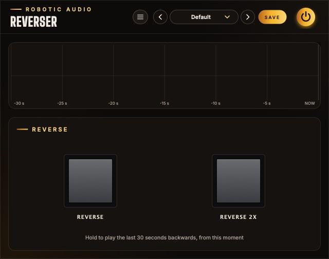

Reverser
Hold a button and the sound you just heard plays backwards, starting from this very moment. Let go and you are back in the present. Reverser is always listening, so there is nothing to arm, record or sync.
- Live reverse effect
- 30 seconds of history
- Normal and double speed
- Click-free fades
- No latency
- Stereo
- AU · VST3 · Standalone

Quick start
One minute from install to rewind.
Put it on a track
Insert Reverser on anything with sound going through it: drums, a vocal, a whole mix bus. It passes the sound through untouched.
Let it listen
Play for a few seconds. The display fills with the waveform of what went through, newest on the right.
Hold Reverse
Press and hold REVERSE. The live sound fades out and the past plays backwards from the instant you pressed.
Let go
Release the button. The reversed sound fades out and the live sound returns, exactly where the song is now.
Try double speed
Hold REVERSE 2X instead: backwards at twice the speed, an octave higher.
Automate it
Both buttons are host parameters. Draw them in your DAW's automation lane to place reverses exactly on the beat.
The window
A display and two buttons.
- Header
- The preset bar, the power button (bypass) and the menu (three lines) with this manual, About and the website. Click the logo for the version and credits.
- History display
- The waveform of the last 30 seconds that passed through the plugin. NOW is the right-hand edge; the grid marks every 5 seconds back to −30 s. It scrolls to the left as time passes.
- Reverse
- A push button that lights while you hold it. Plays the history backwards at normal speed.
- Reverse 2x
- The same, at double speed and an octave up.
Reading the display
While a button is held, a vertical marker shows where in the history Reverser is reading: amber and labelled 1x for Reverse, green and labelled 2x for Reverse 2x. The stretch it has played since you pressed is drawn in the marker's colour. Because the display keeps scrolling while you hold, the marker travels left faster than the waveform does: the present moves on while the playhead goes the other way.
Signal flow
One recorder, two backwards players and a crossfade.
Every block of audio that arrives is first written into the history, then sent on. With no button held, the live sound passes straight to the output without any processing at all, bit for bit.
Each button owns a player that reads the history backwards and a fade (g1 and g2 in the diagram, each between 0 and 1). The live sound is turned down by exactly as much as the players are turned up, so the three always add up to one: a crossfade, never a pile-up.
The recorder sits before everything else. It keeps recording the live input while you hold a button, and it never hears the reversed sound. Holding Reverse twice in a row therefore never reverses a reverse: you always get the real past.
The history
A tape loop that never stops.
Reverser keeps the most recent 30 seconds of its input, in stereo, in a ring of memory: each new sample overwrites the one that is now 30 seconds old. Recording starts the moment the plugin starts running and needs no button.
- Length
- 30 seconds at any sample rate.
- Channels
- Stereo (mono tracks work too).
- What it hears
- The plugin's input, exactly as it arrives. Effects placed before Reverser are recorded; effects after it are not.
- Fresh start
- The history is empty when the plugin is loaded or the audio engine restarts, and fills up from there. Until 30 seconds have passed, Reverser can only go back as far as it has heard.
Reverse
Backwards at normal speed, from the moment you press.
Pressing REVERSE places a playhead on the sample that is passing through right now and starts walking it back through the history, one sample per sample. What you hear is the last moments mirrored in time: the note that just ended comes first, then the one before it, each with its decay turned into a swell.
Speed and pitch are unchanged, so the reversed material stays in tune and in tempo. A bar of music takes exactly one bar to play backwards: hold the button for a beat, a bar or two bars and the reverse fits the grid.
The picture above is what the display shows. The point where you pressed drifts left with the rest of the waveform, and the playhead runs away from it, further left. The distance between "now" and the playhead grows at twice real time.
Reverse 2x
Twice as fast, an octave up.
REVERSE 2X works the same way, but its playhead steps back two samples for every sample it plays. Everything happens twice as fast and sounds an octave higher, like a tape rewinding at double speed: two bars of music fit into one bar of holding.
Why it stays clean
Skipping every other sample halves the highest frequency that can be represented. Anything above that would fold back down as harsh, inharmonic aliasing. To prevent it, the 2x player does not pick single samples: each output sample is a weighted average of the 31 history samples around the playhead (a windowed-sinc low-pass filter with a Blackman window, set just below the new limit). The result is the same as filtering the history first and then playing it fast, worked out only for the samples that are actually needed.
The normal-speed player needs none of this: it reads the recorded samples exactly as they are.
Fades & handover
Why pressing and releasing never clicks.
Jumping instantly between the live sound and a different point in time would put a step in the waveform, which you hear as a click. Reverser instead crossfades over 8 milliseconds: short enough to feel immediate and stay tight on a beat, long enough to be silent.
| When you | This happens |
|---|---|
| Press a button | Its player starts at the current sample and fades in over 8 ms while the live sound fades out by the same amount. |
| Release it | The player fades out over 8 ms and the live sound fades back in. The player keeps running backwards until its fade has finished. |
| Press the other button while holding one | The new player starts from now and fades in; the old one fades out. The newest press always wins. |
| Release the newer button, still holding the older | The live sound returns. To reverse again, release and press: a player only starts on a press. |
| Run out of history | The player fades itself out when it reaches the oldest recorded sound, and the live sound returns even though the button is still held. |
Because the playhead starts on the very sample being output, the first thing you hear after pressing is the sound of an instant ago: the join between forwards and backwards is continuous, a mirror rather than a cut.
How far back
The recorder and the playhead move in opposite directions.
While you hold a button, the recorder keeps adding new sound at one end of the 30-second history and dropping the oldest at the other, and the playhead walks towards that oldest end. They meet sooner than 30 seconds:
| Button | Longest hold | Sound reached |
|---|---|---|
| Reverse | 15 seconds | the 15 seconds before you pressed |
| Reverse 2x | 10 seconds | the 20 seconds before you pressed |
These are the limits once the history is full. Right after loading the plugin, a hold ends when it reaches the first sound Reverser heard. In both cases the player fades out by itself and the live sound comes back.
Automation
The buttons are parameters: perform them or draw them.
- Reverse
- On while held. off / on
- Reverse 2x
- On while held. off / on
- Bypass
- The power button in the header. off / on
Your host sees Reverse and Reverse 2x as on/off parameters. Record your button presses as automation, draw blocks in an automation lane, or map them to a MIDI controller or pad. A block that is one bar long plays the bar before it backwards; the reverse starts on the block's left edge.
Reverse starts at the beginning of the audio block in which the press arrives, so with drawn automation the timing is as tight as your host's buffer size.
Presets & bypass
The header every Robotic Audio plugin shares.
- Preset bar
- Previous, next, the preset list (with Save As, Delete and Open Folder) and SAVE. Reverser has nothing to store besides its buttons, which presets leave out, so it ships with a single Default preset.
- Power
- Bypasses the plugin with a short, click-free crossfade. While bypassed, Reverser does not record: the history picks up again when you switch it back on.
- Menu
- This manual, About Reverser and the website.
Ideas
Things to try.
On a drum bus, hold Reverse for the last beat of a phrase. The hits of the beat before come back as swells that lead into the downbeat.
On the master, hold Reverse 2x for a bar before a drop: two bars of the song spin back at double speed.
Tap Reverse for an eighth note right after a word. The end of the word is thrown back at the listener.
On a guitar or piano with a reverb after Reverser, hold Reverse through a sustained chord: its decay turns into a crescendo.
Automate short Reverse blocks, a sixteenth each, with gaps between them. Every block restarts from its own "now", so the reverses chase the beat.
Alternate Reverse and Reverse 2x on a melody: a call at pitch, an answer an octave up.
Specifications
The numbers.
| Property | Value |
|---|---|
| History | 30 seconds, stereo |
| Speeds | 1x (same pitch) and 2x (one octave up) |
| Fades | 8 ms, linear, on press, release and handover |
| Anti-aliasing (2x) | 31-tap windowed-sinc low-pass at 0.45 of the halved sample rate |
| Latency | None |
| Dry signal | Untouched (bit-identical) while no button is held |
| Parameters | Reverse, Reverse 2x (momentary), Bypass |
| Formats | AU, VST3, Standalone |